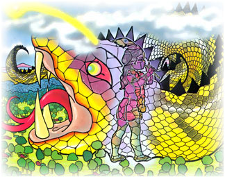
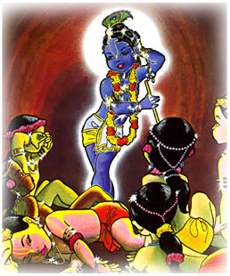

Una vez adentro Gopal se hizo mas y mas y mas grande, mientras Agha al estar siendo ahogada se movia ferozmente. Sus aires vitales salieron por encima de su cabeza formando una luz tan resplandeciente que como un rayo, se perdió entre los cielos.

En el estomago de Agha, Krishna encontró a todos sus amigos inconcientes, pero miradolos y llamandolos por sus nombres todos se despertaron y juntos salieron de las entrañas del monstruo.